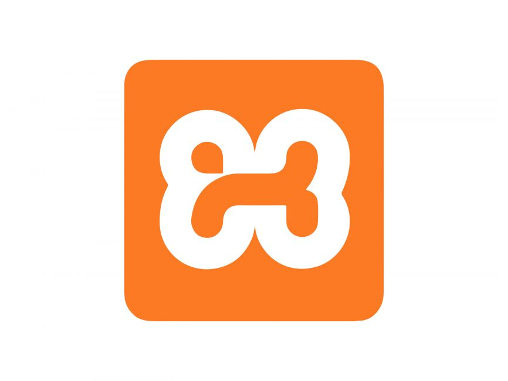
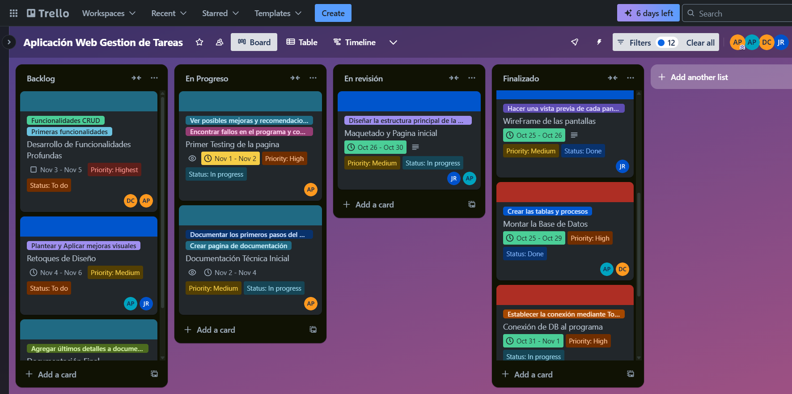
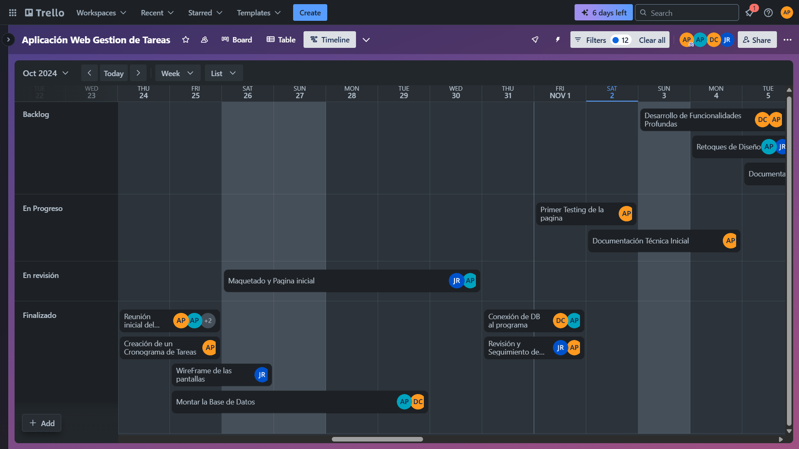
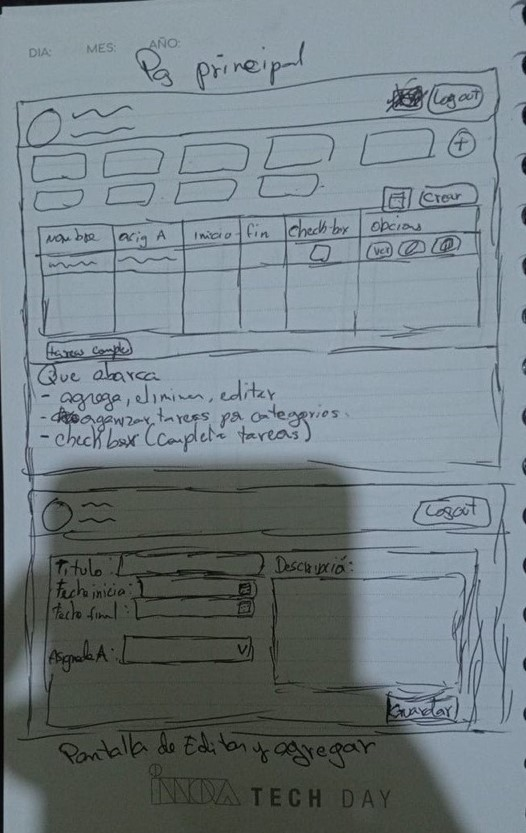
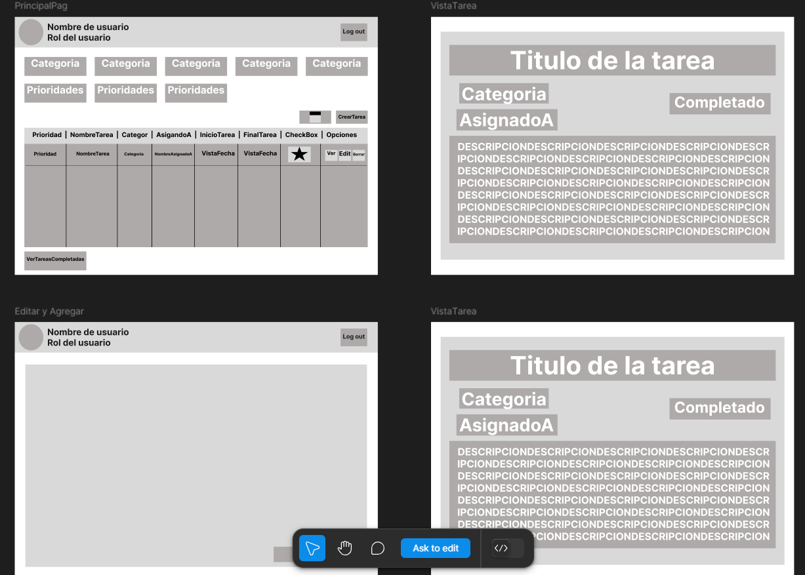
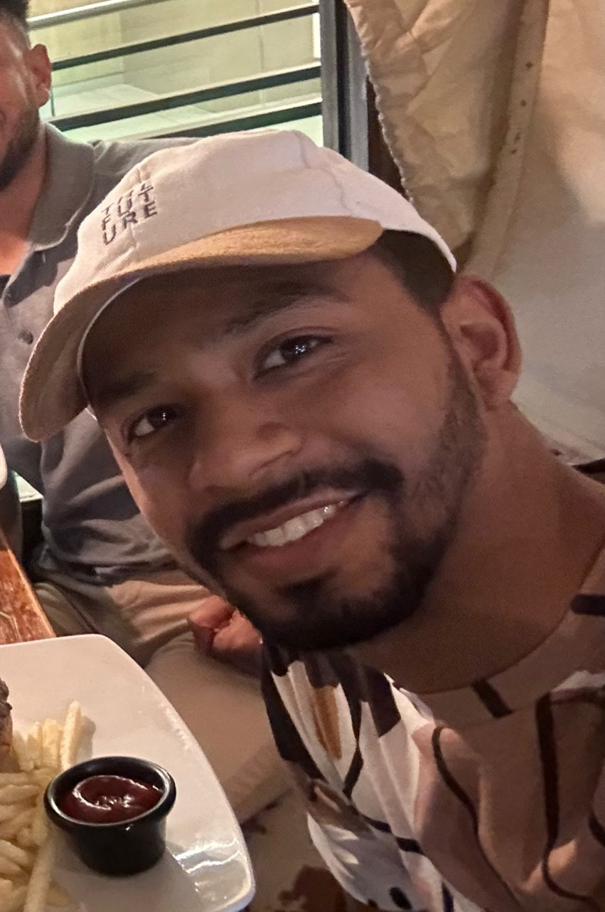

En nuestra reunión inicial, discutimos las herramientas necesarias, el diseño general de la página,
las pantallas que debería incluir la aplicación y el alcance general del proyecto. Al finalizar,
optamos por implementar un diseño de estilo "Tecno Pixel". Además, acordamos las pantallas que serían necesarias para cada
rol dentro de la aplicación:
El proyecto incluirá las siguientes pantallas:
Para el Jefe: Página de Login, Página Principal, Agregar Tarea, Editar Tarea, Calendario y Documentación, y la de Ver Tareas Completadas.
Para el Empleado: Página de Login, Página Principal, Calendario y Documentación.
Arquitectura del Proyecto
La arquitectura del proyecto está basada en un conjunto de tecnologías que permiten la creación y funcionamiento óptimo de la aplicación web. A continuación, se describen las herramientas y tecnologías utilizadas:
Lenguaje de Programación: PHP
PHP es el lenguaje de programación elegido para el desarrollo del backend, lo que permite la interacción con el servidor y la base de datos.

Servidor Local: XAMPP
XAMPP es una plataforma de servidor local que incluye Apache, MySQL, PHP y Perl, esencial para crear y gestionar el servidor web y la base de datos durante el desarrollo.
Entorno de Desarrollo: Visual Studio Code
Visual Studio Code es el editor de código utilizado, conocido por su rapidez y capacidad de personalización, con extensiones para facilitar el desarrollo y la depuración.
Base de Datos: SQL Server
SQL Server se encargó de gestionar los datos de la aplicación, permitiendo una organización eficiente de la información en la base de datos estructurada.
Framework CSS: Bootstrap
Bootstrap fue utilizado para crear un diseño web responsivo, permitiendo una visualización óptima en diferentes dispositivos y resoluciones de pantalla.
Lenguajes de Maquetado: HTML y CSS
HTML y CSS se usaron para el desarrollo de la estructura y estilo visual de la aplicación.
Tipografías Externas
Se utilizaron las fuentes 'DM Serif Display' para los títulos y 'Merriweather' para los párrafos, mejorando la legibilidad y apariencia de los textos.
Costos y Recursos
El desarrollo de la aplicación web involucró diversos recursos, tanto materiales como humanos, que fueron esenciales para cumplir con los plazos y requisitos del proyecto. Los costos se distribuyeron entre hardware, software y el personal especializado necesario en cada fase del proyecto. Las fases fueron planificadas de la siguiente manera:
Hardware y Software
Se utilizó hardware estándar para desarrollo y pruebas, con equipos adecuados para la ejecución de las herramientas necesarias. En cuanto al software, todas las herramientas mencionadas en la sección anterior fueron de uso gratuito o de licencias accesibles.
Personal
El equipo estaba compuesto por desarrolladores backend, frontend, diseñadores gráficos y especialistas en bases de datos. Además, hubo un gestor de proyectos encargado de la planificación y seguimiento.
Tiempo Requerido
El proyecto fue dividido en varias fases, con tiempos asignados para cada una:
Fase de Planificación: Esta fase consistió en la selección de las tecnologías y herramientas necesarias para el desarrollo del proyecto. Estuvo dedicada a definir la arquitectura y los recursos del proyecto. Tiempo estimado: 2 semanas.
Fase de Diseño: En esta fase se desarrollaron los wireframes y el diseño visual inicial de las interfaces de usuario. Se realizaron maquetas primarias para la estructura visual de la aplicación. Tiempo estimado: 3 semanas.
Fase de Integración: La fase de integración consistió en combinar el frontend y el backend, asegurando que todos los componentes del sistema funcionaran correctamente. Se realizaron pruebas de integración y ajustes necesarios. Tiempo estimado: 4 semanas.
Fase de Despliegue: Finalmente, se desplegó la aplicación en el servidor de producción, realizando las últimas pruebas y asegurando que la aplicación estuviera lista para su entrega. Tiempo estimado: 2 semanas.
Cronograma
El proyecto fue ejecutado a lo largo de casi 3 semanas, con un total aproximado de 60 horas de trabajo.
Las fases del proyecto fueron distribuidas de la siguiente manera: la fase de planificación, que incluyó la elección de
tecnologías y el diseño inicial, se completó en las primeras 10 horas; la fase de diseño, que abarcó la creación de wireframes
y maquetado inicial, tomó alrededor de 15 horas; la fase de integración, dedicada a la unificación de todas las partes del
proyecto, requirió aproximadamente 20 horas; y finalmente, la fase de despliegue, que consistió en la entrega final y pruebas del
sistema, se llevó unas 15 horas adicionales.

Cronograma en Metodologia Kanban dividido en Backlog, En Progreso, En Revisión y Finalizado.

Cronograma en Metodologia Gantt dividido en Backlog, En Progreso, En Revisión y Finalizado.
Se diseño un wireframe para cada una de las pantallas de la aplicación como guía visual
durante la fase de desarrollo.

Ideas Conceptuales
Primero se plantearon estos diseños, los cuales fueron hechos en papel
y luego digitalizados. Se utilizó la herramienta Figma.

Sobre Nosotros
Jill Reyes
Lideró la planificación y ejecución del proyecto, gestionando eficazmente los recursos y el equipo,
asegurando que todas las fases del desarrollo se cumplieran con éxito y dentro de los plazos establecidos.
Anel Pineda
Lideró la planificación del el cronograma. También, participó activamente en el desarrollo y la implementación de la
funcionalidad clave de la aplicación, asegurando que todas las características interactivas y operativas funcionaran
correctamente y cumplieran con los requisitos del proyecto.
Alexander Prado
Contribuyó de manera destacada en el diseño de la base de datos, el desarrollo del front-end y la implementación del
back-end, aportando su experiencia en cada fase del proyecto.

David Carrasquilla
Contribuyó significativamente en el desarrollo tanto del front end como del back end, colaborando en la creación de una
interfaz de usuario intuitiva y en la implementación de las funcionalidades clave del sistema, asegurando una experiencia
de usuario fluida y un rendimiento eficiente en todas las áreas.